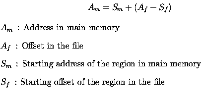

The essential mechanism for address conversion from a persistent pointer to its corresponding reference pointer is a mapping of a region of a storage file in main memory. When a region of a file is mapped in a region in main memory, the offset from the beginning of the file can easily be converted to the address in the region in main memory by a simple calculation described below.

This formula is valid on condition that the offset in the file is within the region.